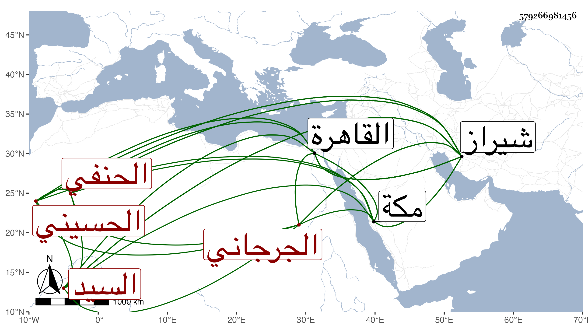

0902Sakhawi.DawLamic.ITO20230111-ara1.EIS1600.579266981456
Biography ID: 579266981456
1087
علي بن محمد بن علي السيد الزين أبو الحسن الحسيني الجرجاني الحنفي عالم الشرق ويعرف بالسيد الشريف وقال لي ابن سبطه حين أخذه عني بمكة في سنة ست وثمانين أنه علي بن علي بن حسين والأول أعرف . اشتغل ببلاده وأخذ المفتاح عن شارحه النور الطاووسي وعنه أخذ الشرح المشار إليه وبعض الزهراوين من الكشاف مع الكشف للسراج عمر البهيماني وكذا أخذ شرح المفتاح للقطب عن ولد مؤلفه مخلص الدين أبي الخير علي ، وقدم القاهرة وأخذ بها عن أكمل الدين وغيره وأقام بسعيد السعداء أربع سنين ثم خرج إلى بلاد الروم ثم لحق ببلاد العجم ورأس هناك بحيث وصفه العفيف الجرهي في مشيخته بالعلامة فريد عصره ووحيد دهره سلطان العلماء العاملين افتخار أعاظم المفسرين ذي الخلق والخلق والتواضع مع الفقراء وقال غيره أن من شيوخه بالقاهرة العلامة مباركشاه قرأ عليه المواقف لشيخه العضد وقال أبو الفتوح الطاووسي وهو ممن أخذ عنه بعد أن عظمه جدا : شهرته تغنيني عن ذكر نسبه وصيت مهارته في العلوم يكفيني في بيان حسبه سمعت عليه من شرحي التلخيص مع حاشيته التي كتبها على المطول وكذا مؤلفه شرح المفتاح ، وقال فيه البدر العيني كان عالم الشرق علامة دهره وكانت بينه وبين التفتازاني مباحثات ومحاورات في مجلس تمرلنك تكرر استظهار السيد فيها عليه غير مرة وآخر من علمته ممن حضرها وأتقنها العلاء الرومي الآتي في علي بن موسى وكان له أتباع يبالغون في تعظيمه ويفرطون في إطرائه كعادة العجم وله تصانيف يقال إنها تزيد على الخمسين قلت عين لي ابن سبطه منها تفسير الزهراوين ومن الشروح شرح فرائض الحنفية السراجية والوقاية والمواقف للعضد والمفتاح للسكاكي والتذكرة للنصير الطوسي والجغميني في علم الهيئة والكافية بالعجمية وحاشية على كل من تفسير البيضاوي والمشكاة والخلاصة للطيبي والعوارف والهداية للحنفية والتجريد لنصير الدين الطوسي وحل مشكله والمطالع وشرح الشمسية والمطول والمختصر وشرح طوالع الأصبهاني وشرح هداية الحكمة وشرح حكمة العين وحكمة الإشراق والتحفة والرضى في النحو وشرح نقركار والمتوسط والخبيصي والعوامل الجرجانية ورسالة الوضع وشرح شك الإشارات للطوسي والتلويح أو التوضيح والنصاب في لغة العجم ومتن أشكال التأسيس وشرح العضد وتحرير إقليدس للطوسي وعلى قصيدة كعب بن زهير وله مقدمة في الصرف بالعجمية وأجوبة أسئلة إسكندر سلطان تبريز ورسالة للوجود وأخرى للوجود في الموجود بحسب القسمة العقلية وأخرى في الحرف وأخرى في الصوت وأخرى في الصغرى والكبرى في المنطق بالعجمية وعربهما ابنه السيد الشمس محمد وأخرى في مناقب الخواجة بهاء الدين الملقب بنقش بند وأخرى في الوجود والعدم وهما بالعجمي بهست ونيست وأخرى في الآفاق والأنفس يعني سنريهم آياتنا في الآفاق وفي أنفسهم وأخرى في علم الأدوار وفي بعض ما تقدم ما لم يكمل وبلغنا أنه الذي حرر الرضى شرح الحاجبية وكان فيه سقم كثير وقد تصدى للإقراء والتصنيف والفتيا وتخرج به أئمة نحارير وكثرت أتباعه وطلبته واشتهر ذكره وبعد صيته ولقينا غير واحد من أصحابه . مات كما قال العفيف الجرهي وأبو الفتوح الطاوسي في يوم الأربعاء سادس ربيع الآخر سنة ست عشرة بشيراز ودفن بتربة وقب داخل سور شيراز بالقرب من الجامع العتيق المسمى بمحلة سواحان في قبر بناه لنفسه ، وأرخه العيني ومن تبعه في سنة أربع عشرة والأول أصح ووصف بأنه كان شيخا أبيض اللحية نيرا وضيئا ذا فصاحة وطلاقة وعبارة رشيقة ومعرفة بطرق المناظرة والمباحثة والاحتجاج ذا قوة في المناظرة وطول روح وعقل تام ومداومة على الإشغال والاشتغال وربما رجح على السعد التفتازاني رحمهما الله وإيانا ، وقد ذكره المقريزي في عقوده باختصار قال وابنه محمد برع في علوم عديدة . ومات ولم يبلغ الأربعين في سنة ثمان وثلاثين ودفن عند أبيه بشيراز .
